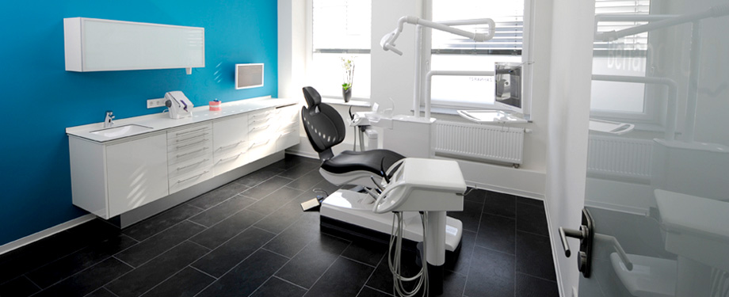

ON Medical center's original clinic is a bright, modern physician-operated walk-in and family practice clinic located in downtown Toronto. From our friendly, respectful front-office staff to our highly-trained family physicians we hope that you will find our clinic welcoming and comfortable. We strive for excellence in all aspects of medical care and will provide you and your family with consistently high-quality service.
In addition to our physician services, we are pleased to offer appointments with popular local registered massage therapist Chris Urae, as well as counsellors, a dietician, an acupuncturist and a physiotherapist . The staff look forward to meeting you and providing for your healthcare needs.
